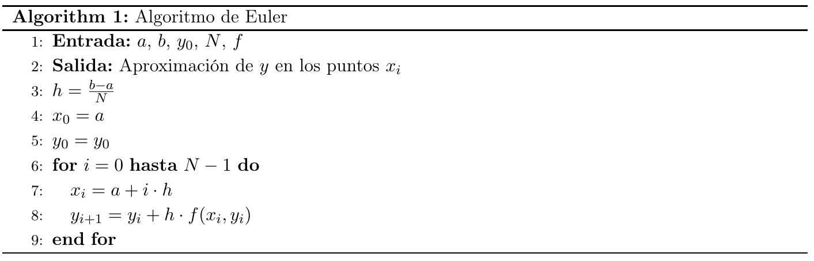
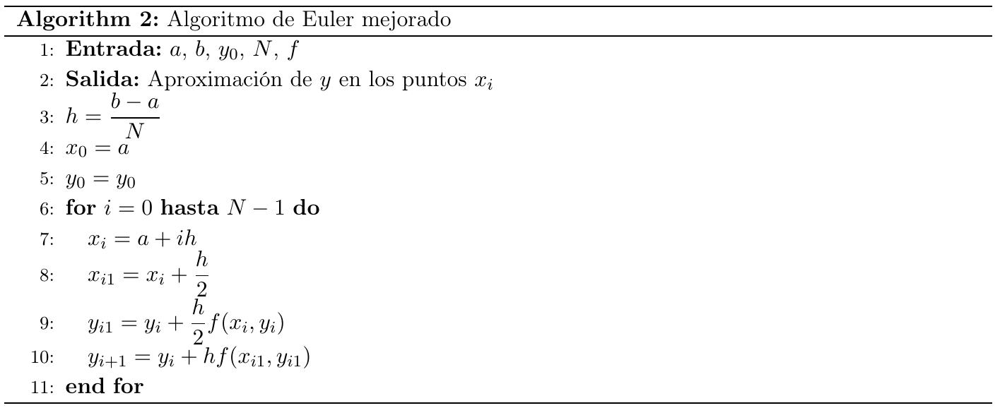
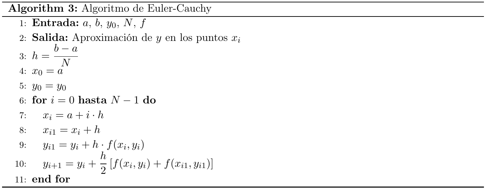
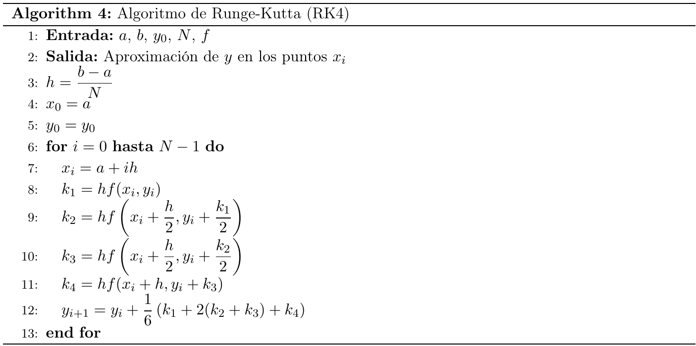
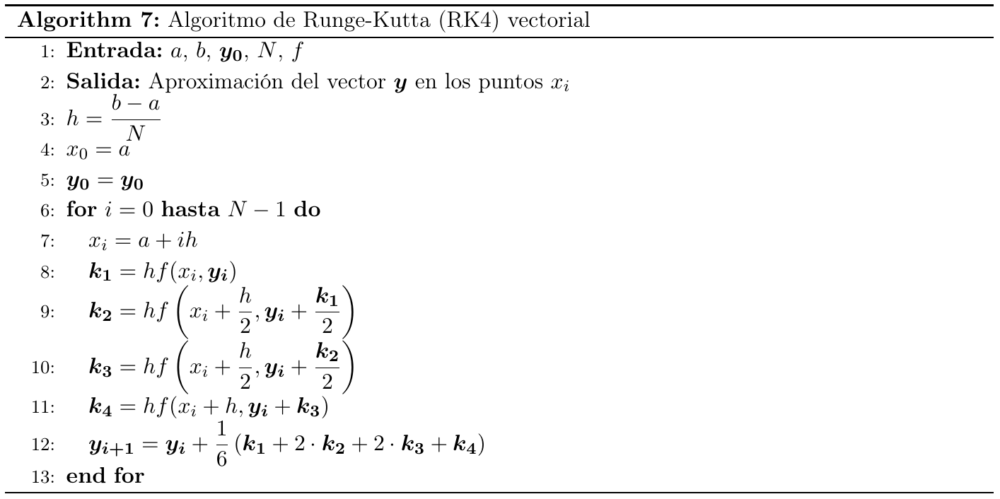

Contenido
- Introducción
- Métodos numéricos explícitos para un P.V.I
- Métodos Runge-Kutta
- Resolución numérica de sistemas de EDOs
- Método de diferencias finitas
- Taller de Modelamiento matemático y fenómenos de evolución
Introducción
En este taller utilizaremos el lenguaje de programación Python junto con algunas de sus bibliotecas especializadas, para encontrar solución numérica para el siguiente PVI,
\[\left\{\begin{align} &y^{\prime}(x)=f(x, y(x)), \quad x \in[a, b], \\ &y(a)=y_{0} \text { dado.} \end{align}\right.\]El objetivo principal es implementar los métodos numéricos clásicos para la resolución de ecuaciones y sistemas de ecuaciones diferenciales ordinarias.
Los métodos numéricos para resolver el P.V.I. dado, se basan en tomar una partición uniforme del intervalo $[a, b]$ en $N$ subintervalos de igual longitud:
\[h=\frac{b-a}{N},\text{ con } x_{i}=a+i h, \quad i=0, \ldots, N,\]y obtener sucesivamente $N$ valores $y_{1}, y_{2}, \ldots, y_{N}$ que aproximan a los valores $y\left(x_{1}\right), \ldots, y\left(x_{N}\right)$ de la solución exacta en los nodos $x_{1}, \ldots, x_{N}$.
Para interactuar con el contenido de esta introducción, acceda a los enlaces de Google Colab.
Métodos numéricos explícitos para un P.V.I
Método de Euler
Una manera geométrica de aproximar la solución de este problema consiste en reemplazar la derivada $y^{\prime}$ por la aproximación
\[y^{\prime}(x) \approx \frac{y(x+h)-y(x)}{h},\]válida para $h$ pequeño. Haciendo este reemplazo en el P.V.I obtenemos
\[\frac{y(x+h)-y(x)}{h} \approx f(x, y(x))\]de donde,
\[y(x+h) \approx y(x)+h f(x, y(x)).\]Luego, comenzando de la condición inicial $y(a)=y_{0}$ y considerando $h$ pequeño, el valor
\[y_{1}:=y(a)+h f(a, y(a))\]define una aproximación para $y(a+h)$. Una vez calculada esta aproximación, se puede utilizar para obtener la aproximación $y_{2}$ de $y(a+2 h)$, dada por,
\[y_{2}:=y_{1}+h f\left(a+h, y_{1}\right).\]Repitiendo este proceso se pueden obtener aproximaciones para $y(a+3 h)$, $y(a+4 h), \ldots, y(a+N h)$.
Usando nodos $x_{i}$ equiespaciados obtenemos el siguiente algoritmo:

La implementación de este método numérico en Python que resuelve el P.V.I
\[\left\{\begin{align} &y^{\prime}=x + y, \quad x \in[0, 1], \\ &y(a) = 1. \end{align}\right.\]la puedes encontrar en el siguiente Google Colab
Métodos Runge-Kutta
Los métodos de Runge-Kutta consideran, en cada intervalo $[x_{i}, x_{i+1}]$, algunos nodos auxiliares de la forma
\[x_{i j}:=x_{i}+\theta_{j} h, \quad j=0,1, \ldots, q,\]donde, $q \in \mathbb{N}$ recibe el nombre de rango del algoritmo y los parámetros $\theta_{j}$ verifican
\[0 \leq \theta_{j} \leq 1, \quad \text { con } \quad \theta_{0}=0 \quad \text { y } \quad \theta_{q}=1 .\]Así, en cada caso,
\[x_{i 0}=x_{i} \quad \text { y } \quad x_{i q}=x_{i+1}\]luego
\[{x}_{i}={x}_{i 0}, {x}_{i 1}, {x}_{i 2}, {x}_{i 3}, \ldots, {x}_{i q}={x}_{i + 1}.\]En los nodos auxiliares se definen los valores
\[\begin{aligned} y_{i 0} &:=y_{i}, \\ y_{i j} &:=y_{i}+h \sum_{l=0}^{j-1} A_{j l} f\left(x_{i l}, y_{i l}\right), \quad j=1, \ldots, q, \end{aligned}\]siendo $y_{i+1}:=y_{i q}$ el valor aproximado por el método para $y\left(x_{i+1}\right)$ y los coeficientes $A_{j l}$ son contantes a determinar apropiadamente.
Definition: Se define el error global del método como
\[E:=\max _{0 \leq i \leq N-1}\left|y\left(x_{i+1}\right)-y_{i+1}\right|,\]donde $y\left(x_{i+1}\right)$ es el valor de la solución exacta del P.V.I. en el nodo $x_{i+1}$ e $y_{i+1}$ es el valor obtenido por el método numérico.
Los puntos $x_{i j}$ y las constantes $A_{j l}$ se determinan de manera tal que el error global cumpla
\[E \leq C h^{p},\]con $C$ es una constante positiva. El correspondiente método se dice de orden $p$ y rango $q$, y se abrevia por $R K_{p q}$.
Método de Euler RK11
Corresponde al caso en que $q=p=1$; es decir, el método Runge-Kutta de orden uno y rango uno: $R K_{11}$. Por lo tanto $\theta_{0}=0, \theta_{1}=1$, y en consecuencia,
\[x_{i 0}=x_{i} \quad \text { y } \quad x_{i 1}=x_{i+1} .\]Los valores de $y_{i 0}$ e $y_{i 1}$ se obtienen mediante
\[\begin{aligned} &y_{i 0}=y_{i} \\ &y_{i 1}=y_{i}+h A_{10} f\left(x_{i 0}, y_{i 0}\right). \end{aligned}\]Por lo tanto, como $y_{i+1}:=y_{i 1}$, se tiene en este caso que
\[y_{i+1}=y_{i}+h A_{10} f\left(x_{i}, y_{i}\right).\]Si se escoge $A_{10}=1$, se obtiene que el error global satisface $E \leq C h$, con $C$ una constante positiva. Es decir, el método de Euler es de orden $p=1$.
Métodos RK22
Como $p=q=2$, estos métodos resultan ser de orden dos $(p=2)$ y rango dos $(q=2)$. Por lo tanto el error global es de orden $h^{2}$. Los nodos se obtienen con $j=0,1,2$ y vienen dados por
\[x_{i 0}=x_{i}, \quad x_{i 1}=x_{i}+\theta_{1} h \quad \text { y } \quad x_{i 2}=x_{i+1} .\]donde el parámetro $\theta_{1}$ debe escogerse de manera tal que $0<\theta_{1} \leq 1$.
Escogiendo los coeficientes $A_{10}=\theta_{1}, A_{20}=1-\frac{1}{2 \theta_{1}}$ y $A_{21}=\frac{1}{2 \theta_{1}}$, se obtiene la siguiente familia de algoritmos $R K_{22}$
\[\begin{aligned} x_{i 1} &:=x_{i}+\theta_{1} h \\ y_{i 1} &:=y_{i}+h \theta_{1} f\left(x_{i}, y_{i}\right) \\ y_{i+1} &:=y_{i 2}:=y_{i}+h\left(1-\frac{1}{2 \theta_{1}}\right) f\left(x_{i}, y_{i}\right)+h\left(\frac{1}{2 \theta_{1}}\right) f\left(x_{i 1}, y_{i 1}\right) . \end{aligned}\]Método de Euler mejorado
Corresponde a la elección de $\theta_{1}=\frac{1}{2}$, con lo cual $x_{i 1}$ resulta ser el punto medio del intervalo $[x_{i}, x_{i+1}]$. De las ecuaciones anteriores se obtiene $y_{i+1}=$ $y_{i}+h f\left(x_{i 1}, y_{i 1}\right)$ y el algoritmo queda

La implementación en Python de este método numérico para el P.V.I previo, la puedes encontrar en el siguiente Google Colab
Método de Euler-Cauchy
Corresponde al caso en que $\theta_{1}=1$, con lo cual $x_{i 1}=x_{i+1}$ y el algoritmo queda

La implementación en Python de este método numérico para el P.V.I previo, la puedes encontrar en el siguiente Google Colab
Método RK44 clásico (o RK4)
Los métodos $R K_{44}$ son una familia de métodos de orden $p=4$ y rango $q=4$, en donde $\theta_{0}=0, \theta_{3}=1$, y $\theta_{1}$ y $\theta_{2}$ son parámetros a escoger. Si se elige
\[\theta_{1}=\theta_{2}=\frac{1}{2},\]el método se conoce como $R K_{44}$ clásico, o simplemente RK4. Es sumamente utilizado debido a su alta precisión.
El algoritmo RK4 puede escribirse convenientemente como sigue

La implementación en Python de este método numérico para el P.V.I previo, la puedes encontrar en el siguiente Google Colab
Resolución numérica de sistemas de EDOs
Considere el P.V.I. definido por el sistema de ecuaciones de primer orden
\[\left\{\begin{array}{cl} y_{1}^{\prime}(x) & =f_{1}\left(x, y_{1}(x), y_{2}(x), \cdots, y_{n}(x)\right) \\ y_{2}^{\prime}(x) & =f_{2}\left(x, y_{1}(x), y_{2}(x), \cdots, y_{n}(x)\right) \\ \vdots & =\quad \vdots \\ y_{n}^{\prime}(x) & =f_{n}\left(x, y_{1}(x), y_{2}(x), \cdots, y_{n}(x)\right), \quad x \in[a, b], \\ y_{1}(a) & =y_{1}^{0}, \quad y_{2}(a)=y_{2}^{0}, \quad \cdots \quad, \quad y_{n}(a)=y_{n}^{0} \quad \text { (dados). } \end{array}\right.\]Este sistema se escribe:
\[\left\{\begin{array}{l} \boldsymbol{y}^{\prime}(x)=\boldsymbol{f}(x, \boldsymbol{y}(x)), \quad x \in[a, b], \\ \boldsymbol{y}(\boldsymbol{a})=\boldsymbol{y}^{0}(\text { dado }), \end{array}\right.\]donde
\[\boldsymbol{y}(x)=\left(\begin{array}{c} y_{1}(x) \\ y_{2}(x) \\ \vdots \\ y_{n}(x) \end{array}\right), \quad \boldsymbol{f}(x, \boldsymbol{y}(x))=\left(\begin{array}{c} f_{1}\left(x, y_{1}(x), \ldots, y_{n}(x)\right) \\ f_{2}\left(x, y_{1}(x), \ldots, y_{n}(x)\right) \\ \vdots \\ f_{n}\left(x, y_{1}(x), \ldots, y_{n}(x)\right) \end{array}\right), \quad \boldsymbol{y}^{0}=\left(\begin{array}{c} y_{1}^{0} \\ y_{2}^{0} \\ \vdots \\ y_{n}^{0} \end{array}\right)\]Los métodos numéricos vistos para una ecuación diferencial ordinaria se generalizan directamente al caso de un sistema de $n$ ecuaciones de primer orden. Por ejemplo, el método de Euler $\left(R K_{11}\right)$ se expresa como sigue:
\[\left\{\begin{array}{l} \boldsymbol{y}^{0}: \text { dato, } \\ \boldsymbol{y}_{i+1}=y_{i}+h \boldsymbol{f}\left(x_{i}, \boldsymbol{y}_{i}\right), \quad i=0,1,2, \ldots, N-1 \end{array}\right.\]Todos los otros métodos numéricos estudiados se pueden formular similarmente en forma vectorial para sistemas.
E.D.O. de orden superior
Una ecuación diferencial de orden $n$
\[y^{(n)}(x)=f\left(x, y(x), y^{\prime}(x), \ldots, y^{(n-1)}(x)\right)\]se puede expresar como un sistema de $n$ ecuaciones de primer orden al definir
\[z(x)=\left(\begin{array}{c} z_{1}(x) \\ z_{2}(x) \\ \vdots \\ z_{n}(x) \end{array}\right)=\left(\begin{array}{c} y(x) \\ y^{\prime}(x) \\ \vdots \\ y^{(n-1)}(x) \end{array}\right) .\]En efecto,
\[\boldsymbol{z}^{\prime}(x)=\left(\begin{array}{c} y^{\prime}(x) \\ y^{\prime \prime}(x) \\ \vdots \\ y^{(n)}(x) \end{array}\right)=\left(\begin{array}{c} z_{2}(x) \\ z_{3}(x) \\ \vdots \\ f\left(x, z_{1}, z_{2}, \ldots, z_{n}\right) \end{array}\right)=: \boldsymbol{f}(x, z)\]y luego, $\boldsymbol{z}^{\prime}(x)=\boldsymbol{f}(x, z)$ es un sistema de E.D.O. de primer orden al que se pueden aplicar los métodos numéricos vistos.
Por el mismo procedimiento, un sistema de ecuaciones diferenciales de orden superior, también puede expresarse mediante un sistema de E.D.O. de primer orden.
En resumen, los siguientes métodos numéricos no solo son útiles para resolver sistemas de ecuaciones diferenciales, sino que también permiten abordar ecuaciones diferenciales ordinarias (EDOs) de orden superior, transformándolas previamente en un sistema equivalente de EDOs de primer orden.
Ejemplo
Queremos resolver el P.V.I. para la ecuación del péndulo.
\[\left\{\begin{array}{l} \ddot{\theta}+\frac{g}{L} \operatorname{sen}(\theta)=0, \quad t \in[0,2 \pi], \\ \theta(0)=\frac{\pi}{4}, \quad \dot{\theta}(0)=0, \end{array}\right.\]donde $\dot{\theta}$ y $\ddot{\theta}$ denotan derivadas respecto del tiempo.
Para resolver esta ecuación no lineal (que no tiene solución analítica) debemos hacer el siguiente cambio de variable
\[\begin{aligned} &\theta_{1}=\theta \\ &\theta_{2}=\dot{\theta}_{1}, \end{aligned}\]de donde obtenemos el siguiente sistema de EDOs
\[\left\{\begin{array}{l} \dot{\theta}_{1}=\theta_{2}, \\ \dot{\theta}_{2}=-\frac{g}{L} \operatorname{sen}\left(\theta_{1}\right), \\ \theta_{1}(0)=\frac{\pi}{4}, \quad \theta_{2}(0)=0 . \end{array}\right.\]Note que $\theta_{1}$ corresponde al ángulo $\theta$ y $\theta_{2}$ a la velocidad angular $\dot{\theta}$.
Método de RK44 para sistemas
El método de Runge-Kutta 4 para sistemas y su implementación en Python vienen dadas por

y
respectivamente.
Método de diferencias finitas
Supongamos que queremos resolver el P.V.C.
\[\left\{\begin{array}{l} -y^{\prime \prime}+r y^{\prime}+k y=f(x), \quad x \in(a, b), \\ y(a)=\alpha, \quad y(b)=\beta, \end{array}\right.\]donde $k$ y $r$ son constantes positivas. Supondremos que el problema tiene una única solución, la cual es al menos cuatro veces diferenciable.
El método de diferencias finitas se basa en las siguientes aproximaciones para las derivadas de $y$
\[\begin{aligned} &y^{\prime}(x) \approx \frac{y(x+h)-y(x-h)}{2 h}, \\ &y^{\prime \prime}(x) \approx \frac{y(x+h)-2 y(x)+y(x-h)}{h^{2}}, \end{aligned}\]las cuales son válidas si $h$ es suficientemente pequeño. En efecto. Consideremos los siguientes desarrollos de Taylor:
\[\begin{aligned} &y(x+h)=y(x)+y^{\prime}(x) h+\frac{h^{2}}{2 !} y^{\prime \prime}(x)+\frac{h^{3}}{3 !} y^{\prime \prime \prime}(x)+O\left(h^{4}\right), \\ &y(x-h)=y(x)-y^{\prime}(x) h+\frac{h^{2}}{2 !} y^{\prime \prime}(x)-\frac{h^{3}}{3 !} y^{\prime \prime \prime}(x)+O\left(h^{4}\right) . \end{aligned}\]Sumándolos se tiene
\[y(x+h)+y(x-h)=2 y(x)+h^{2} y^{\prime \prime}(x)+O\left(h^{4}\right),\]de donde
\[y^{\prime \prime}(x)=\frac{y(x+h)-2 y(x)+y(x-h)}{h^{2}}+O\left(h^{2}\right).\]Por otra parte, restando los desarrollos de Taylor anteriores,
\[\begin{aligned} &y(x+h)=y(x)+y^{\prime}(x) h+\frac{h^{2}}{2 !} y^{\prime \prime}(x)+\frac{h^{3}}{3 !} y^{\prime \prime \prime}(x)+O\left(h^{4}\right), \\ &y(x-h)=y(x)-y^{\prime}(x) h+\frac{h^{2}}{2 !} y^{\prime \prime}(x)-\frac{h^{3}}{3 !} y^{\prime \prime \prime}(x)+O\left(h^{4}\right), \end{aligned}\]se tiene
\[y(x+h)-y(x-h)=2 h y^{\prime}(x)+O\left(h^{3}\right),\]y de aquí
\[y^{\prime}(x)=\frac{y(x+h)-y(x-h)}{2 h}+O\left(h^{2}\right) .\]Las aproximaciones de las derivadas que se obtuvieron reciben el nombre de diferencias centradas. Consideremos una partición uniforme del intervalo $[a, b]$ en $n$ subintervalos de igual longitud
\[h=\frac{b-a}{n}, \quad x_{i}=a+i h, \quad i=0, \ldots, n.\]Entonces, las aproximaciones de $y^{\prime}$ e $y^{\prime \prime}$ en los nodos interiores $x_{i}, i=$ $1, \ldots, n-1$, pueden escribirse como sigue
\[\begin{aligned} &y^{\prime}\left(x_{i}\right)=\frac{y\left(x_{i+1}\right)-y\left(x_{i-1}\right)}{2 h}+O\left(h^{2}\right), \\ &y^{\prime \prime}\left(x_{i}\right)=\frac{y\left(x_{i+1}\right)-2 y\left(x_{i}\right)+y\left(x_{i-1}\right)}{h^{2}}+O\left(h^{2}\right) . \end{aligned}\]Sustituyendo estas expresiones en el P.V.C.
\[\left\{\begin{array}{l} -y^{\prime \prime}+r y^{\prime}+k y=f(x), \quad x \in(a, b), \\ y(a)=\alpha, \quad y(b)=\beta, \end{array}\right.\]para cada uno de los nodos interiores $x_{i}, i=1, \ldots, n-1$, se tiene
\[\begin{align} &-\frac{y(x_{i+1}-2y(x_i)+y(x_{i-1}))}{h^2}+r\frac{y(x_{i+1})-y(x_{i-1})}{2h}+ky(x_i)=f(x_i)+\tau_i, i=1,\ldots,n-1\\ &y(x_0)=\alpha,\quad y(x_n)=\beta. \end{align}\]donde los términos $\tau_{i}=O\left(h^{2}\right)$ provienen de los errores $O\left(h^{2}\right)$ de la aproximación de las derivadas mediante las diferencias centradas. Al despreciar los términos $\tau_{i}$, que se denominan errores de truncamiento, el método de diferencias finitas permite aproximar los valores $y\left(x_{i}\right)$ mediante valores $y_{i}$ que satisfacen
\[\left\{\begin{array}{l} -\displaystyle\frac{y_{i+1}-2 y_{i}+y_{i-1}}{h^{2}}+r\displaystyle\frac{y_{i+1}-y_{i-1}}{2 h}+k y_{i}=f\left(x_{i}\right), \quad i=1, \ldots, n-1, \\ y_{0}=\alpha, \quad y_{n}=\beta . \end{array}\right.\]De esta forma, la resolución numérica del P.V.C. por diferencias finitas se reduce a resolver un sistema de ecuaciones lineales.
Multiplicando por $h^{2}$, las ecuaciones pueden reescribirse como sigue:
\[\left\{\begin{aligned} \left(-1-\frac{r h}{2}\right) y_{i-1}+\left(2+k h^{2}\right) y_{i}+\left(-1+\frac{r h}{2}\right) y_{i+1} &=h^{2} f\left(x_{i}\right), \\ i &=1, \ldots, n-1, \\ y_{0}=\alpha, \quad y_{n}=\beta . \end{aligned}\right.\]Así, definiendo para $i=1, \ldots, n-1$,
\[a_{i}:=-1-\frac{r h}{2}, \quad b_{i}:=2+k h^{2}, \quad c_{i}:=-1+\frac{r h}{2}, \quad f_{i}=f\left(x_{i}\right),\]llegamos a la forma matricial del sistema de ecuaciones:
\[\left(\begin{array}{ccccc} b_{1} & c_{1} & 0 & \cdots & 0 \\ a_{2} & \ddots & \ddots & \ddots & \vdots \\ 0 & \ddots & \ddots & \ddots & 0 \\ \vdots & \ddots & \ddots & \ddots & c_{n-2} \\ 0 & \cdots & 0 & a_{n-1} & b_{n-1} \end{array}\right)\left(\begin{array}{c} y_{1} \\ y_{2} \\ \vdots \\ y_{n-2} \\ y_{n-1} \end{array}\right)=h^{2}\left(\begin{array}{c} f_{1} \\ f_{2} \\ \vdots \\ f_{n-2} \\ f_{n-1} \end{array}\right)-\left(\begin{array}{c} a_{1} \alpha \\ 0 \\ \vdots \\ 0 \\ c_{n-1} \beta \end{array}\right) .\]Llamemos $A_h$ a la matriz tridiagonal del sistema anterior, $y:=\left(y_{1}, \ldots, y_{n-1}\right)^{\mathrm{t}}$ al vector de incógnitas y $b_h$ al vector de lado derecho. Es decir,
\[A_h y=b_h .\]La implementación en Python del meodo de diferencias finitas para resolver numéricamente el P.V.C
\[-y'' (x) + ry'(x) + k y(x) = 2 \ln(x) + 3,\]sujeto a
\[y(1) = 0, y(4) = 1/4+\ln(2).\]lo encuentras en el siguiente Google Colab
Taller de Modelamiento matemático y fenómenos de evolución
- Considere el PVI de segundo orden [15 pts.]
$$ \left\{\begin{array}{rcl}
y''(x)-y(x)&=&\sin(\pi x), \quad x\in [0,1],\\
y(0)&=&1,\\
y'(0)&=&0.
\end{array}
\right.$$
a) Escribir el PVI como un sistema de problemas de valores iniciales.
b) Adapte el método de Euler Mejorado para resolver el sistema obtenido con tamaño de paso $h=1/100$ en el intervalo $[a,b]=[0,1]$. Grafique la solución del PVI.
c) ¿Cuál es el valor de la aproximación de la derivada de $y$ evaluada en $x=1$?.
-
Considere la siguiente ecuación diferencial, [15 pts.]
$$y'' (x) - 3y'(x) + y(x) = x\sin(x),$$
sujeto a
$$y(1) = 0.5, y(2) = 1.$$
a) Deduzca la matriz $A_h$ y el vector $b_h$ asociados a la versión discreta de la ecuación diferencial usando el método de diferencias finitas.
b) Resuelva la ecuación diferencial usando el método de diferencias finitas con $h\in\{0.1, 0.01, 0.001\}$.
c) Grafique la solución obtenida en figuras separadas para cada $h$.
-
Considere la siguiente ecuación diferencial no homogénea [15 pts.]
$$-u'' (x) + x u(x) = (1+2x-x^2) e^x,$$
sujeto a
$$u(0) = 1, u(1) = 0,$$
cuya solución exacta viene dada por
$$u(x) = (1 - x) e^x.$$
a) Deduzca la matriz $A_h$ y el vector $b_h$ asociados a la versión discreta de la ecuación diferencial usando el método de diferencias finitas.
b) Resuelva la ecuación diferencial usando el método de diferencias finitas con $h=0.001$ y grafique la solución obtenida junto a la solución exacta.
-
El efecto Dzhanibekov o efecto de la raqueta de tenis o teorema del eje intermedio es un
efecto que se estudia en mecánica clásica. Su nombre se debe al cosmonauta ruso Vladimir Dzhanibekov que observó
las consecuencias de este teorema (el teorema del eje intermedio) durante una estadía en el espacio en 1985. [15 pts.]
En siguiente video
se explica en qué consiste el teorema del eje intermedio y se muestran algunos experimentos en los que pueden observarse sus consecuencias.En este taller observaremos estas consecuencias numéricamente.
El problema de valores iniciales (ecuaciones de Euler para la rotación de un cuerpo sólido rígido)
\[ \begin{aligned} \omega_1'(t) & = \frac{I_2 - I_3}{I_1} \omega_2 \omega_3, \\ \omega_2'(t) & = \frac{I_3 - I_1}{I_2} \omega_1 \omega_3, \\ \omega_3'(t) & = \frac{I_1 - I_2}{I_3} \omega_1 \omega_2, \end{aligned} \quad t \in [0, T], \quad \begin{aligned} \omega_1(0) & = a, \\ \omega_2(0) & = b, \\ \omega_3(0) & = c, \end{aligned} \] en el que $I_1, I_2, I_3, a, b, c, T \in \mathbb{R}^+$, describe cómo varían las velocidades angulares ($\omega_1, \omega_2, \omega_3$) de un cuerpo sólido rígido, con respecto a cada uno de sus ejes principales de rotación. Las velocidades angulares dependen de los momentos de inercia del cuerpo con respecto a cada uno de los ejes, es decir, de los valores de $I_1, I_2$ e $I_3$. El efecto Dzhanibekov ocurre cuando estos valores son distintos dos a dos.- Escriba una función en Python que, dados $t \in \mathbb{R}$ y $\omega \in \mathbb{R}^3$, $\omega = \begin{pmatrix} \omega_1 \\ \omega_2 \\ \omega_3 \end{pmatrix}$, retorne $f(t, \omega)$, siendo $$ f(t, \omega) = \begin{pmatrix} \dfrac{I_2 - I_3}{I_1} \omega_2 \omega_3 \\[1em] \dfrac{I_3 - I_1}{I_2} \omega_1 \omega_3 \\[1em] \dfrac{I_1 - I_2}{I_3} \omega_1 \omega_2 \end{pmatrix}, $$ adecuada para usar el método de Runge-Kutta44. Tome $I_1 = 1, I_2 = 5, I_3 = 20$.
-
Observemos primero que cuando hacemos rotar el cuerpo rígido con respecto a uno (y solo uno) de sus ejes
principales de rotación, las velocidades angulares con respecto a cada uno de los dos ejes se mantienen
constantes.
- Resuelva el PVI con $T = 10$, mediante el método de Runge-Kutta44 con $h = 0.01$ (si necesita un $h$ más pequeño puede cambiarlo), y $a = 1$, $b = 0$ y $c = 0$ (rotación con respecto a primer eje). y grafique la solución del PVI. ¿ocurre que las velocidades angulares resultantes son constantes?
-
Una interpretación del teorema del eje intermedio es la siguiente: la solución del PVI es inestable
cuando al menos dos de los valores iniciales para las velocidades angulares son distintos de cero y
el valor inicial para $\omega_2$, que denotamos por $b$, es mucho mayor que los restantes valores iniciales.
Si, por el contrario, el valor inicial para $\omega_1$ es mucho mayor que los valores iniciales para $\omega_2$ y
$\omega_3$ o el valor inicial de $\omega_3$ es mucho mayor que los valores iniciales para $\omega_1$ y $\omega_2$,
la solución es estable. En los experimentos en el video esta inestabilidad se observa en los cambios bruscos que ocurren cuando un objeto rota con respecto al eje que tiene momento de inercia intermedio ($I_2$ en nuestro caso).
-
Resuelva el PVI con $T = 10$ mediante el método de Runge-Kutta44 con $h = 0.01$ (si necesita un $h$ más pequeño puede cambiarlo) y:
- $a = 1$, $b = 10^{-2}$ y $c = 10^{-2}$ (el eje principal de rotación es el primero).
- $a = 10^{-2}$ , $b = 1$ y $c = 10^{-2}$ (el eje principal de rotación es el segundo).
- ¿Observas el efecto del eje intermedio? ¿Ocurre en las soluciones a los problemas con el primer conjunto de valores iniciales que el eje principal de rotación sigue siendo el que tiene una mayor velocidad angular inicial? ¿Pasa esto también cuando $b$ es el mayor de los valores iniciales?
-
Resuelva el PVI con $T = 10$ mediante el método de Runge-Kutta44 con $h = 0.01$ (si necesita un $h$ más pequeño puede cambiarlo) y: